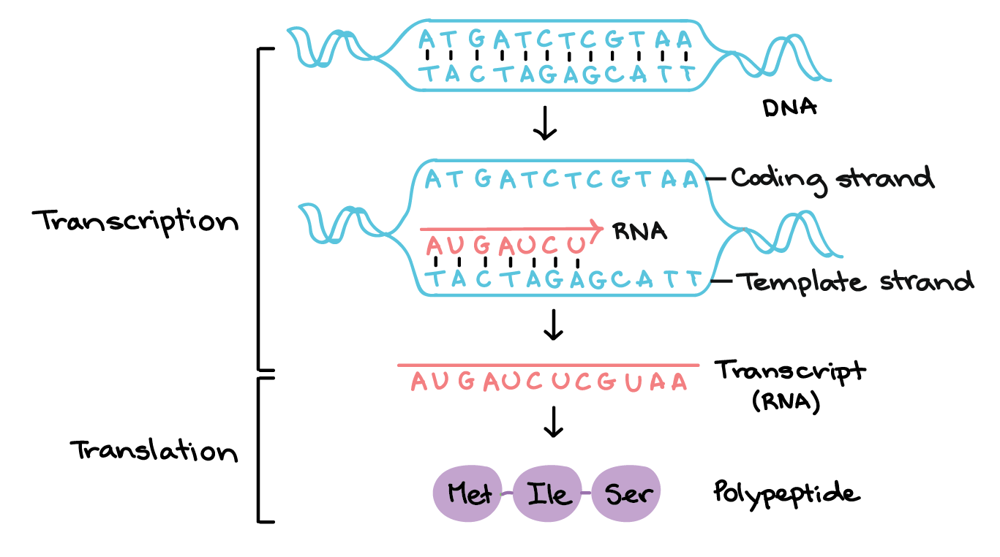
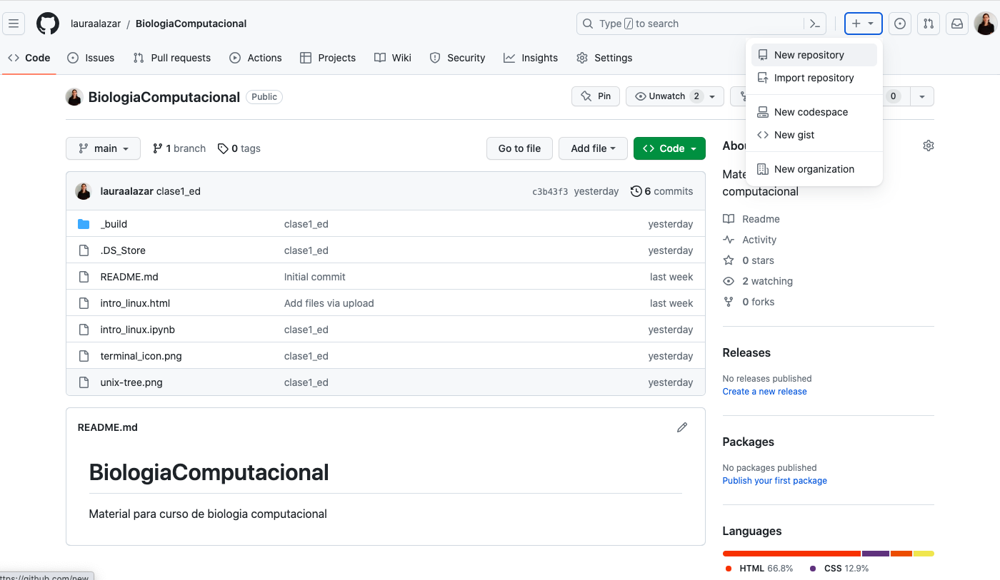

Introducción a Biopython#
El proyecto de Biopython es una asociación internacional de desarrolladores del lenguaje Python con aplicación a biología molecular computacional. Es de libre acceso y está muy bien documentado, para mayor profundidad consulte el Recetario de Biopython. Para la instalación y requisitos consultar biopython/biopython
Instalación de Biopython#
Se recomienda la instalación de biopython utilizando [conda]{https://docs.conda.io/projects/conda/en/4.6.0/user-guide/install/macos.html}
conda install -c conda-forge biopython
python
Cell In[1], line 1
conda install -c conda-forge biopython
^
SyntaxError: invalid syntax
import Bio
print(Bio.__version__)
Si sale un error después de llamar la librería es porque hay un error de instalación. De lo contrario, está bien por el momento y empezamos a trabajar con secuencias.
Secuencias#
Aunque una secuencia es un conjunto de letras, biopython tiene un formato especial para definir una secuencia
from Bio.Seq import Seq
my_seq = Seq("AGTACACTGGT")
my_seq
my_seq.complement()
my_seq.reverse_complement()
Para entender por qué es importante el complemento y el complemento reverso, recordemos brevemente cómo es la síntesis de proteínas
Múltiples Secuencias#
Normalmente no escribimos las secuencias “manualmente” sino que tenemos un archivo con una o múltiples secuencias. Vamos a trabajar con las secuencias de sars covid que ya descargamos en el directorio sars_covid19
from Bio import SeqIO
dna_file = "Sars_cov.dna.fa"
for record in SeqIO.parse(dna_file, "fasta"):
print(record)
La función SeqIO.parse abre el archivo input_file y lo intepreta como un archivo fasta. Como solo hay una secuencia, el for loop solo itera una vez y muestra (“print”) los atributos de la secuencia. Compárelo con el archivo fasta para entender que significa cada línea.
Ahora vamos a extraer la secuencia y calcular su tamaño
for record in SeqIO.parse(dna_file, "fasta"):
print(record.seq)
print(len(record.seq))
De manera similar se hace con un archivo de múltiples secuencias, por ejemplo el archivo de proteínas. Vamos a iterar sobre las secuencias del archivo “Sars_cov.pep.fa” y a desplegar los identificadores
prot_file = "Sars_cov.prot.fa"
for record in SeqIO.parse(prot_file, "fasta"):
print(record.id)
En este archivo hay 12 proteínas de diferentes tamaños y con funciones distintas. Vamos a imprimir su id, su tamaño y su descripción:
for record in SeqIO.parse(prot_file, "fasta"):
print(record.id,len(record.seq),record.description)
La descripción tiene mucha información importante pero esta no es muy clara, entonces vamos a extraer el fragmento que contiene la función, vamos a dividir la descripción en items, utilizando la función split.() y luego le damos el número (index) del item entre de interés [] (es el item 9 pero como python comienza a contar desde 0 entonces es el 8)
for record in SeqIO.parse(prot_file, "fasta"):
print(record.id,len(record.seq),record.description.split()[8])
Escribir secuencias un archivo#
Con frecuencia estamos interesados en un subconjunto de los genes o proteínas para realizarun análisis a profundidad de ellos. En este caso vamos a seleccionar las glicoproteínas que son aquellas que codifican la espícula. Esta espícula (“spike”) es la encargada de mediar la entrada del virus hacia el hospedero y tiene una tasa de mutación mas alta que los otros genes, lo que presumiblemente dió origen a cepas mas virulentas (https://en.wikipedia.org/wiki/Coronavirus_spike_protein)
from Bio.Seq import Seq
from Bio.SeqRecord import SeqRecord
for record in SeqIO.parse(prot_file, "fasta"):
if (record.description.split()[9] == "glycoprotein"):
print(record)
Hasta aquí hemos seleccionado las secuencias que contienen el término “glycoprotein”. Para escribirlas en un archivo en un formato adecuado de secuencias vamos a utilizar la función de biopython Bio.SeqIO.write() y a cambiar un poco el estilo.
glycoproteins = (record for record in SeqIO.parse(prot_file, "fasta") if (record.description.split()[9] == "glycoprotein"))
SeqIO.write(glycoproteins, "sars_covid19_glycoproteins.fa", "fasta")
Donde eperas que esté el archivo? Chequéalo mirando el directorio actual (“get current working directory”). Verifica que si se haya generado con el nombre y formatos correctos, y la información que deseamos que contenga.
import os
os. getcwd()
os.listdir()
Por último, vamos a escribir los comando que utilizamos en un script de python para dejar registro de lo que hicimos y pueda ser repetible
#!/usr/local/bin/
# Script por Laura Salazar Jaramillo
# Genera un subconjunto de glicoproteinas de SARS-covid 19
# Importamos las librerías necesarias
import os
import sys
import Bio
from Bio import SeqIO
from Bio.Seq import Seq
# Archivos de entrada (inputs)
dna_file = "Sars_cov.dna.fa"
prot_file = "Sars_cov.prot.fa"
# Listamos el tamano del genoma
for record in SeqIO.parse(dna_file, "fasta"):
print("La longitud en nc del genoma es:",len(record.seq))
# Listamos los id y longitudes de las proteínas
for record in SeqIO.parse(prot_file, "fasta"):
print(record.id,len(record.seq),record.description.split()[9])
# Seleccionamos las glicoproteínas y las guardamos en un archivo aparte
glycoproteins = (record for record in SeqIO.parse(prot_file, "fasta") if (record.description.split()[9] == "glycoprotein"))
SeqIO.write(glycoproteins, "sars_covid19_glycoproteins.fa", "fasta")
Este script se puede ejecutar en la terminal escribiendo los comandos
python3 glycoproteins.py
Introducción a Github#
GitHub es una plataforma muy útil donde se puede almacenar coódigo, compartirlo, revisarlo, actualizarlo y en general colaborar con programas y códigos. Para hacer uso de esta plataforma hay que registrarse con un email:
Entre a la página web
Haga Click en “Sign Up”
Suministre un correo electrónico y un password
Nota: Si ya tiene cuenta en GitHub, tan solo click en Sign in y acceda con su correo y contraseña
Crear un repositorio#
Un repositorio es un conjunto de archivos que hacen parte de un proyecto. Por ejemplo, estas clases están disponibles en mi repositorio de gitHub “BiologíaComputacional” lauraalazar/BiologiaComputacional Un repositorio permite compartir los archivos del proyecto, actualizarlos y guardar versiones pasadas. También permite que otros colaboren de forma sistemática y organizada. Una vez hagas el registro, recibirá un email para entrar a su cuenta de GitHub
Entrar a la cuenta con el email y clave registradas
Hacer click en + y New repository
Darle un nombre al repositorio. Ej, CompBio
Hacer una breve descripción de lo que se trata. Ej: tareas y ejercicios para el curso
Dar click en Create repository
Darle click en Add file
Arrastrar o subir el archivo que desea compartir
Escribir un mensaje describiendo el contenido de la carga en el campo de comentarios
Dar click en Commit changes para completar la carga
Crear una Bifurcación (Fork)#
En gitHub es posible contribuir a los repositorios de otros usuarios. La contribución se hace en forma de una rama del código o documento que el usuario dueño del repositorio puede decidir “merge” … Para comenzar con la contribución:
Buscar el repositorio de interés. P.e. UniversidadEAFIT/compubiol_course
Dar click en Fork en la parte superior derecha del cuadro interno
Aceptar bifurcación
Desde este momento, este repositorio aparecerá en tu seción y puedes empezar a contribuir!
GitHub local#
Una de las herramientas más interesantes con gitHub es poder clonar repositorios de otros usuarios y mantener actualizados los repositorios personales. Para esto se puede instalar gitHub de manera [local](https://git-scm.com/downloads y sincronizar con la cuenta personal). Para hacer esto es necesario:
Configurar el usuario y correo para correrlo desde la terminal
git config --global user.name "Mona Lisa"
git config --global user.email "email@example.com"
Conectar el Git local con GitHub sonde se petirá el password https://docs.github.com/en/get-started/getting-started-with-git/caching-your-github-credentials-in-git
Clone#
Esta función le permitirá bajar al computador local la totalidad del repositorio de interés. Es importante descargarlo en una carpeta conocida ya que luego debemos volver a acceder a ella, lo cual se puede hacer normalmente como a cualquier directorio
git clone git@github.com:lauraalazar/compubiol_course.git
dentro del directorio donde se ejecutó el comando debe haber un directorio llamado compubiol_course
Push#
Esta función le permitirá subir archivos a un repositorio clonado en el computador local. Primero copie el archivo o carpeta que desea subir. ej:
cd /path/of/compubiol_course/20232/
mkdir fulana
cd fulana
cp /some/path/report.sh /path/of/compubiol_course/20232/fulana/
git add report.sh
git commit -m "adicionar algún mensaje"
git push origin master
Pull#
Esta función puede hacerse desde el explorador en Go to your Project page -> Pull requests tab -> click “New pull request”.